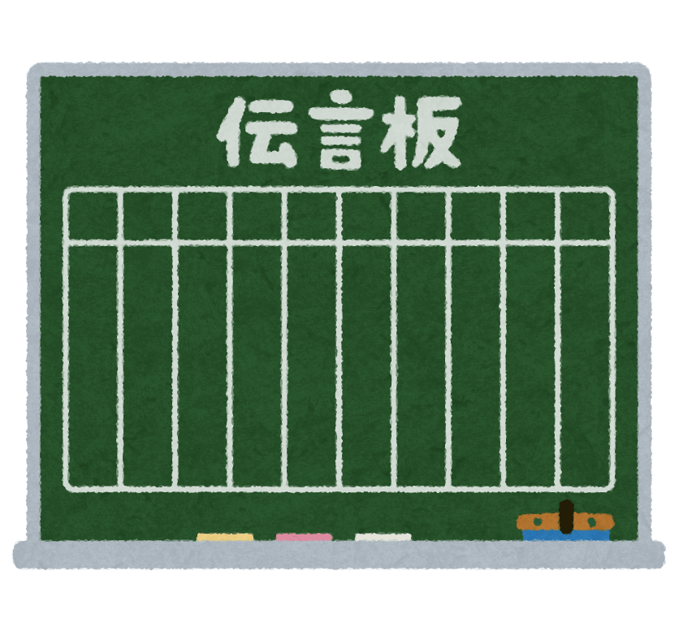

自己紹介

- 氏名：村田健二
- 生年月日：1991年8月11日（年齢：29歳）
- 出身地：熊本県
- 性格：マイペース、神経質
- 座右の銘：「時は金なり」「塵も積もれば山となる」
- 趣味：筋トレ（パーソナルトレーナーの資格保有）
熊本大学理学部を卒業後、熊本大学大学院に進学し環境分析の分野で研究を行いました。大学院修了後、一般財団法人日本食品分析センターに化学分析員として入所。主に抗生物質や合成抗菌剤を対象に、LC-MS/MSや微生物を用いて食品や飼料、医薬品等に含まれるこれらの成分の微量・定量分析を行っています。
会社に依存している現状を打破するため、会社の外でも通用するスキルを身に付けたいと思い、未経験から独学でプログラミング学習を開始。TechAcademyに入会後は一からJavaを学び、学習開始から4か月でオリジナルアプリを作れるまでに成長しました。
まだ実務レベルには遠く及ばないと思いますが、自分に不足しているものややりたいものに対する学習意欲は強く、人の目に見えないところでも努力を継続することができます。IT業界は未経験ですが、向上心や継続力といった自身の強みを活かし、常に成長し続けて会社や社会に貢献していきたいです。
スキル
TechAcademyのJava/Servletコース受講で得たスキル
【スキル】
- 言語：Java、SQL
- DB：MySQL
- AP：Tomcat
- 開発環境：Eclipse
【学習内容】
- Javaの文法とルール
- オブジェクト指向の基礎
-
MySQLとDBの基本
- 正規化
- データのあるべき形
- テーブル結合
-
JDBC
- JavaにおけるDB操作
- 動的なSQLの作成
- Hibernate（フレームワーク）
-
Java Webアプリケーション
- Servlet
- JSP
- JSTL
- DB連携
- MVCモデル
作品
-
オリジナルアプリ
NSCA-CPT オリジナル練習問題
-
テキスト「NSCAパーソナルトレーナーになるための基礎知識」の内容を参考にした、NSCA-CPTの試験対策に使えるオリジナル練習問題アプリです。新規ユーザ登録後、使用可能になります。各章の問題をテスト形式で解くことや、一覧から各問題の詳細を確認することができます。
（管理者権限を持つ者は、新たに練習問題を追加することもできます。） -
日報管理システム -
従業員の日報を管理するアプリです。管理者権限を持つ者が従業員情報を登録した後、使用可能になります。登録された各従業員がログインした後、日報の登録が可能になります。また、登録された日報を部長や課長といった上司が承認する機能もあります。
（「社員番号：10001、パスワード：10001」で総務課部長としてログイン可能です。試しにご使用ください。） -

メッセージボード - メッセージを投稿できるアプリです。ユーザ登録は不要で、誰でも好きなようにメッセージを残すことができます。
お問い合わせ
- E-mail：azukied@gmail.com
- GitHub：https://github.com/azukied